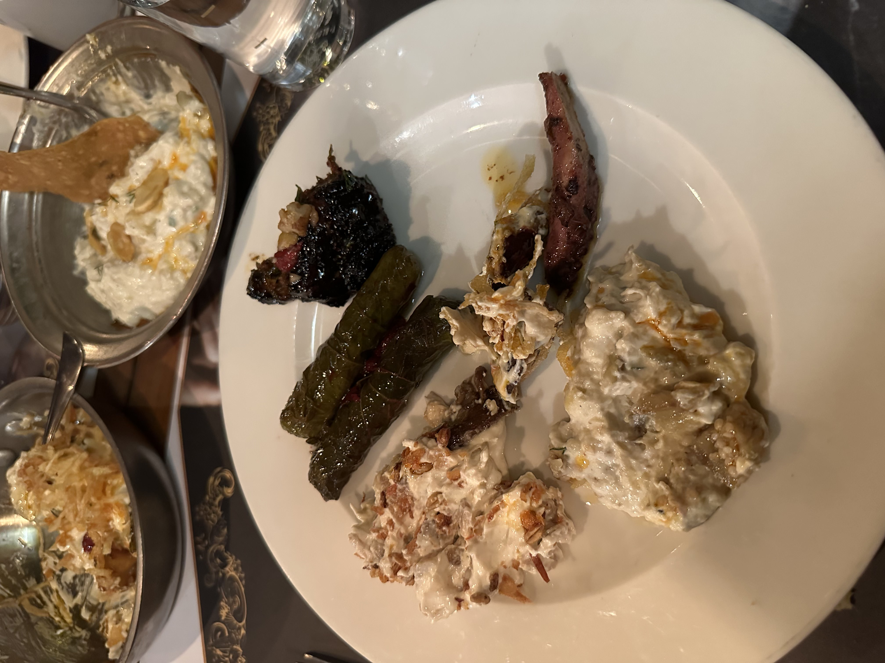
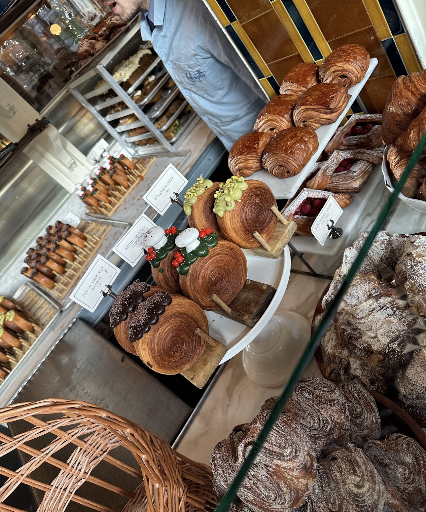

Exploring New Cultures and Cuisines
I love to explore new cultures and cuisines. I document every place I go to Google Maps and here are some pictures of my culinary adventures:

Nothing can beat Turkish meze
Beyti

Tons of bakery
Baking
One of my favorite hobbies is baking. Here are some pictures of my baked goods:
Favorite People
Here are some pictures from my best friends:
 Olive graduating from Puppy Training. She currently knows how to sit, wait, lay down, leave stuff on command, and touch.
Olive graduating from Puppy Training. She currently knows how to sit, wait, lay down, leave stuff on command, and touch.
My family dog Badem who lives in Turkey and who I miss daily.